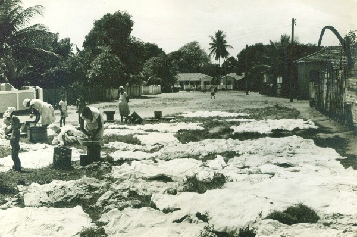
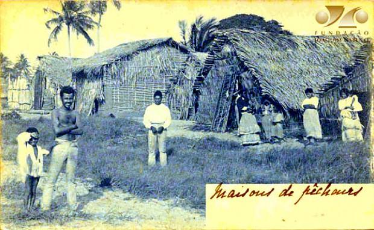

🦀 Aldeias, senzalas, favelas
Este é o Engenho do Meio, zona oeste recifense, em 1970:
🦀 Aldeias, senzalas, favelas
Este é o Engenho do Meio, zona oeste recifense, em 1970:
Recorte do BDGEx
Eu cresci lá e, nesse mapa, minha rua aparece como se fizesse parte de um dos grandes quarteirões do bairro como plotado nele. Acontece que o grande quarteirão no mapa abrigava uma coleção de casinhas ocupadas de qualquer jeito. No tempo das TeleListas, eu não via nos mapas os becos ocupados que se desenhavam dentro do “quarteirão” na frente da minha casa. Essas famílias não apareciam naqueles mapas, era tudo um grande vazio.
Ainda no mapa acima, há outra área aparentemente desocupada. É a atual comunidade de Roda de Fogo. Alguns anos foram necessários para que a região fosse ocupada desde a concessão do espaço às primeiras famílias. Mas desde aquele tempo, sim, já havia algumas pessoas que ali moravam.

Roda de Fogo em 1987
Ao lado do que seria Roda de Fogo, outro terreno havia sido concedido a famílias pelo Estado em 1940. Essas famílias viviam em mocambos no centro do Recife e foram expulsas de lá por Agamenon Magalhães, em um momento da sociedade brasileira de grandes obras urbanas.
Lavadeiras do bairro de Santo Amaro na década de 1940. Do Diário de Pernambuco.
Não é que não há pessoas vivendo nos “espaços vazios”. Nós só estamos educados a não os ver, tanto nos mapas, quanto na cidade. Essas pessoas, gente como eu e você, não são desenhadas nesses documentos. Mas quem desenha esses mapas?
Recorte do plano do Recife de 1956. Conviviam em Santo Amaro as ruas urbanizadas e os alagados; os casarões e os mocambos.
Por trás de todos os mapas famosos do Recife estão portugueses, holandeses, ingleses, franceses, militares brasileiros, militares e companhias… americanas. De Dom João ao Google, as elites foram as responsáveis por documentar a organização do povo na forma de mapas, dando-se o direito de registrar aquilo que os convinha. Por que esperar que os europeus incluíssem as formas nativas em seus desenhos em uma terra onde se havia o consenso de que ela foi dominada? Se os espaços não são de interesse das elites, elas não entram nos mapas.
Recorte colorido de “Hanc tabulam continents laetam Pharnambuci”, Nicolaes Visscher (1630). Apenas os elementos europeus entram nas ilustrações.
De forma clara: as elites dominam a informação. E essas elites, de posse dela, vão ser os responsáveis por educar e informar o povo à seu gosto, aos seus interesses. Por séculos esse tem sido o modo de operação da vida no Recife. As elites vão informar a seus seguidores quais espaços devem ser utilizados e quais espaços devem ser evitados. Seguindo essa cartilha, de forma sistemática, vamos dar as costas para os locais onde não existe interesse da elite, os locais que não estão no mapa.
Cotidianamente damos as costas, negamos a existência de alguns espaços, dentro do Recife. Todos os “quarteirões desocupados”, todas as regiões sem ruas no Google Maps mas cheios de casas na vida real, todas as áreas mal iluminadas, os terrenos murados que terminam murando as ruas, os terrenos de vegetação, os mangues, os rios, as aldeias, as senzalas, os quilombos, os mocambos, os morros, as palafitas e as favelas.
Santa Luzia e Casa Forte ao fundo
Uma das formas mais comuns de negarmos os espaços é a conexão daquele lugar com a violência urbana. Em um comportamento herdado, por mais que saibamos que criminosos estejam dentro das elites, apenas apontamos e estigmatizamos as áreas negadas e seus moradores como perigosos, bandidos, selvagens. Não é a toa.
O esquecimento dessa população é proposital, a aldeia não combina com a cidade portuguesa, aos olhos da coroa. A senzala não combina com a casa, aos olhos do senhorzinho. A favela não combina com o shopping, aos nossos olhos.
Via Mangue
Durante muito tempo no passado, os invasores, depois de muito pressionar com ferro e fogo os moradores dessa terra, foram impedidos de visitar esses locais e assumiram a narrativa, propositalmente, de que os moradores das aldeias os odiavam e que cometeriam barbáries se encontrassem um branco circulando por seus espaços. As elites são as donas das narrativas, donas da informação. A aldeia e a senzala não acabaram, elas se ressignificaram dentro dessas narrativas. Desde 1988, no Brasil, assistimos uma transição para um quadro de maior transparência da vida desses espaços negados, mas com o mesmo propósito: hoje esses espaços são interessantes para as elites pelo simples propósito de que eles dão lucro. As práticas do capitalismo consumista e de uso de microsserviços precisam de uma massa de pessoas para lucrar. Circunstancialmente, no Brasil, essa massa habita a favela e mesmo assim a negação a esses espaços e a essas pessoas continua a existir, a se ressignificar.
As casas de pescadores nas fotografias do Recife de Josebias Bandeira, no arquivo de cartões postais da Fundação Joaquim Nabuco.
Seguindo a mesma linha de raciocínio, há também espaços que as elites nos informam para darmos as costas e assim não os reivindicamos. São espaços construídos, fortificados, de tal forma que quem não é parte da elite tem dificuldade de se aproximar ou não se aproxima de forma alguma, não porque não quer, mas porque sua fortificação impõe traços culturais que devem ser seguidos e impõe meios de acesso restritos à essa elite, como “ter acesso a um carro” ou “conhecer alguém que tem permissão de entrar” para poder lá chegar.
O Curado e a fortaleza contemporânea de Alphaville
A diferença da aldeia para a cidade, da senzala para a casa, da favela para o condomínio é, respectivamente, que em um os serviços da vida contemporânea não conseguem chegar, já no outro eles chegam. E esses serviços permitem acessos a seus moradores e frequentadores que potencializam suas liberdades pessoais, difererentemente dos primeiros. Em resumo, pertencer a um espaço negado é estar preso. Preso a uma realidade apenas, a um modo de vida apenas, às migalhas, à subordinação. A luta por todas as formas de visibilidade do “selvagem” nunca acabou.
Progressão temporal da ponta oeste da ilha do Pina (2009–2019), onde o Riomar está hoje. A impressão do prédio “se mover” é apenas uma ilusão causada pela posição do sol e as sombras no momento das fotografias. É difícil acessar o shopping sem carro?
A elite é a camada social responsável por registrar e manter a informação. Eu, como autor desse texto, por mais que tenha nascido e sido criado no Engenho do Meio, preciso afirmar que faço parte dessa elite.
Se você teve acesso a esse texto, você agora é parte da elite também, se já não era antes.
Então, como participantes dessa elite, por que não ressignificamos nossas formas de comunicação e informação, para que consigamos, de uma vez por todas, derrubar os muros?
De uma Roda de Fogo invisível, para uma visível nos mapas, porém, ainda negada pelos olhos das elites.